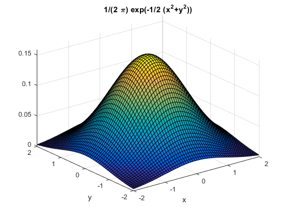

Exercises from sec.10.2 - 10.3
학번 : 20141510, 이름 : 김민우
Contents
1.1
clc clear syms x y F = @(x,y) y.*sin(x); figure ezsurf(F) figure ezcontourf(F) colorbar, xlabel('x'), ylabel('y') dFdx = inline(diff(F(x,y), x)); dFdx(0,-2) dFdx(1,1) [X, Y] = meshgrid(-3:.1:3, -3:.1:3); figure contourf(X, Y, dFdx(X,Y), -3:1:3) colorbar, xlabel('x'), ylabel('y')
ans =
-2
ans =
0.5403
1.2
clear syms x y F = @(x,y) exp(-(x.^2 + y.^2)); figure ezsurf(F) figure ezcontourf(F) colorbar, xlabel('x'), ylabel('y') dFdx = inline(diff(F(x,y), x)); dFdx(1,1) dFdx(0,0) [X, Y] = meshgrid(-2:.1:2, -2:.1:2); figure contourf(X, Y, dFdx(X,Y), -1:.1:1) colorbar, xlabel('x'), ylabel('y')
ans =
-0.2707
ans =
0
2.1
clear syms x y F = @(x,y) y.^2 - 2*x.*(y.^2) + (x.^2) .* (y.^2); figure ezsurf(F) [X,Y] = meshgrid(-0.5:.1:2,-0.5:.1:0.5); figure contourf(X, Y, F(X,Y), -2:0.1:2) colorbar, xlabel('x'), ylabel('y') dFdx = inline(diff(F(x,y),x)) dFdy = inline(diff(F(x,y),y)) [dFdx_xSoln, dFdx_ySoln] = solve(2*x*(y^2) - 2*(y^2) == 0, x,y); dFdx_xSoln dFdx_ySoln [dFdy_xSoln, dFdy_ySoln] = solve(2*y - 4*x*y + 2*(x^2)*y == 0, x,y); dFdy_xSoln dFdy_ySoln figure contourf(X, Y, dFdx(X,Y), -2:0.1:2) colorbar, xlabel('x'), ylabel('y') figure contourf(X, Y, dFdy(X,Y), -2:0.1:2) colorbar, xlabel('x'), ylabel('y') % since dFdx(0,0) == 0, dFdy(0,0) == 0 % and dFdx(1,0) == 0, dFdy(1,0) == 0, % (0,0) and (1,0) are critical points of F. % From ezsurf(F), we know that (0,0) and (1,0) % are local minima of F
dFdx =
Inline function:
dFdx(x,y) = x.*y.^2.*2.0-y.^2.*2.0
dFdy =
Inline function:
dFdy(x,y) = y.*2.0-x.*y.*4.0+x.^2.*y.*2.0
dFdx_xSoln =
0
1
dFdx_ySoln =
0
0
dFdy_xSoln =
0
1
dFdy_ySoln =
0
0

3.1
clear syms x y H = @(x,y) x + y; figure ezsurf(H,[1,5,0,4]) double(int(int(H,x,1,5),y,0,4))
ans =
80
3.2
clear syms x y H = @(x,y) cos(x.*y); figure ezsurf(H,[0,sqrt(pi),0,sqrt(pi)]) double(int(int(H,x,0,sqrt(pi)),y,0,sqrt(pi)))
ans =
1.8519
3.3
clear syms x y H = @(x,y) 1/(2*pi)*exp(-1/2*(x.^2+y.^2)); figure ezsurf(H,[-2,2,-2,2]) double(int(int(H,x,-2,2),y,-2,2))
ans =
0.9111
